import matplotlib.pyplot as plt
import numpy as npGráficas
Una de la parte más importante en la programación cientíica son las graficas que podemos producir con nuestros algoritmos. En este aparte daremos una pequeña introducción a este tema usando dos librerias: matplotlib y numpy para importar estas librerías usamos
Gráficas básicas
ax=[0.,0.5,1.0,1.5,2.0,2.5,3.0]
by=[0.0,0.25,1.0,2.25,4.0,6.25,9.0]
plt.plot(ax,by)
plt.show()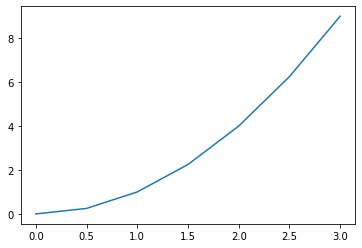
import random
ax, ay = [], []
for i in range(100):
ax.append(random.random())
ay.append(random.random())
plt.scatter(ax, ay)
plt.show()
plt.savefig('plot.png')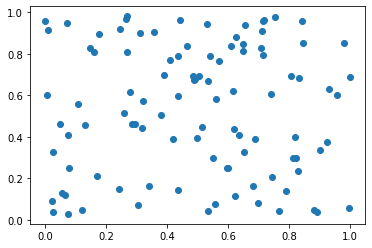
<Figure size 432x288 with 0 Axes>para guardas estas gráficas podemos usar los siguientes comando
plt.savefig('plot.pdf')
plt.savefig('plot.eps')<Figure size 432x288 with 0 Axes>Ejemplo de graficar un finción \(y=\sin^2(x)\) para \(-2\pi\leq x\leq 2\pi\)
Tmamos un aprtición equiespaciada de espacio \(\Delta x\) con $ n $ puntos, de esta forma querermos gráficas las parejas \(y_i=\sin^2(x_i)\) para \(i=0,\dots,n-1\)
import math
import matplotlib.pyplot as plt
xmin,xmax=-2.*math.pi,2.*math.pi
n= 100
x=[0.]*100 # crea los vectores de n elementos
y=[0.]*100
dx=(xmax-xmin)/(n-1)
for i in range(n):
x[i]=xmin+i*dx
y[i]=math.sin(x[i])**2
plt.plot(x,y)
plt.show()
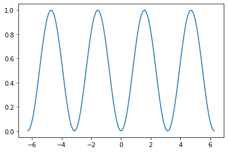
Ahora vamso a realizar la misma gráfica usando vectorización
import numpy as np
import matplotlib.pyplot as plt
n=1000
xmin,xmax =-2.0*np.pi,2.0*np.pi
x=np.linspace(xmin,xmax,n)
y=np.sin(x)**2
plt.plot(x,y)
plt.show()Como usar la vectorización con tuplas
w=[1.0, 2.0,3.0,4.0]
w=w*2 # recuerde que aqui dulica la lista
z=np.array(w)
z=2*z # aqui multiplica cada elemento de z por 2Ahora miremos la siguiente gráfica
\[f(x)=\frac{\sin x}{x}.\]
import numpy as np
import matplotlib.pyplot as plt
n = 1001
xmin, xmax = -2.0*np.pi, 2.0*np.pi
x=np.linspace(xmin,xmax,n)
y=np.sin(x)/x
plt.plot(x,y)
plt.show()C:\Users\portatil\AppData\Local\Temp/ipykernel_11736/1880265921.py:6: RuntimeWarning: invalid value encountered in true_divide
y=np.sin(x)/x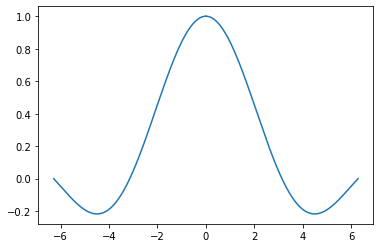
Note como x toma el valor de cero toma el valor NaN y lo ignora. Además presenta un mensaje del hecho
- Labels, legends y resumenes Para gráfica legends y labels hacemos lo siguiente
plt.plot(x,y,label='sin^2(x)')
plt.legend()
plt.show()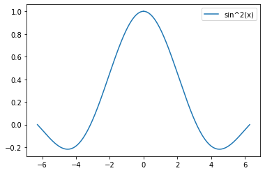
Por defecto la localización queda en el mejor lugar pero las podemos modificar con la siguiente tabla
| String | integer |
|---|---|
| ‘best’ | 0 |
| ‘upper rigth’ | 1 |
| ‘upper ledft’ | 2 |
| ‘lower left’ | 3 |
| ‘lowe right’ | 4 |
| ‘right’ | 5 |
| ‘center left’ | 6 |
| ‘center rigth’ | 7 |
| ‘lower center’ | 8 |
| ‘upper center’ | 9 |
| ‘center’ | 10 |
plt.plot(x, y, label='$sin^2(x)$') # note que aquí colocamos los simbilos $$ para que se pueda inicializar el modo latex
plt.legend(loc=10)
plt.show()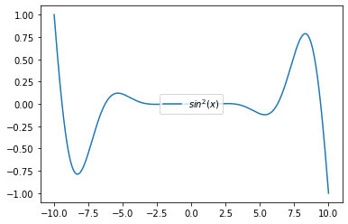
import matplotlib.pyplot as plt
import numpy as np
x = np.linspace(-np.pi/2, np.pi/2, 31)
y = np.cos(x)**3
# 1) remove points where y > 0.7
x2 = x[y <= 0.7]
y2 = y[y <= 0.7]
# 2) mask points where y > 0.7
y3 = np.ma.masked_where(y > 0.7, y)
# 3) set to NaN where y > 0.7
y4 = y.copy()
y4[y3 > 0.7] = np.nan
plt.plot(x*0.1, y, 'o-', color='lightgrey', label='No mask')
plt.plot(x2*0.4, y2, 'o-', label='Points removed')
plt.plot(x*0.7, y3, 'o-', label='Masked values')
plt.plot(x*1.0, y4, 'o-', label='NaN values')
plt.legend()
plt.title('Masked and NaN data')
plt.show()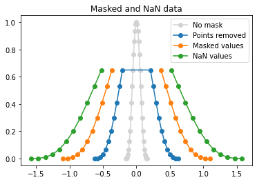
Algunos Matplotlib
| Código | Marca | Descripción |
|---|---|---|
| \(.\) | \(.\) | Punto |
| O | \(o\) | circulo |
| + | \(+\) | mas |
| X | \(\times\) | cruz |
| D | \(\diamond\) | diamante |
| V | \(\nabla\) | Nabla |
| ^ | \(\Delta\) | Nabla |
| S | \(\square\) | cuadrado |
| * | \(\star\) | extrella |
# Tabla de colores
| Color básico | Tabla de colores |
|---|---|
| b=blue | tab:blue |
| g=green | tab:orange |
| r=red | tab:green |
| c=cyan | tab:red |
| m= magenta | tab:purple |
| y=yellow | tab:brown |
| k=black | tab:pink |
| w=white | tab:gray |
| . | tab:olive |
| . | tab:cyan |
tipos de línea
| Código | Tipo de línea |
|---|---|
| - | Solida |
| – | a trozos |
| : | punteada |
-.
Para mas caracteristicas matplotlib
x = np.linspace(0.1, 1., 100)
yi = 1. / x
ye = 10. * np.exp(-2 * x)
plt.plot(x, yi, color='r', linestyle=':', linewidth=4.)
plt.plot(x, ye, color='m', linestyle='--', linewidth=2.)
plt.show()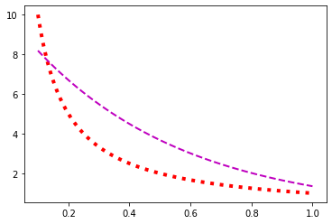
Puntos límites
Los límites de una gráfica se puede reconfigurar usando los comandos
plt.xlim(x_initial,x_final)
plt.ylim(y_initial,y_final)
t = np.linspace(0, 2, 1000)
f = t * np.exp(t + np.sin(20*t))
plt.plot(t, f)
plt.xlim(1.5, 1.8)
plt.ylim(0, 30)
plt.show()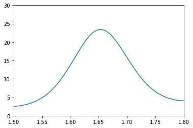
x = np.linspace(-10, 10, 1001)
for n in range(1, 5):
y = x**n * np.sin(x)
y /= max(y)
plt.plot(x, y, label=r'$x^{}\sin x$'.format(n))
plt.legend(loc='lower center')
plt.show()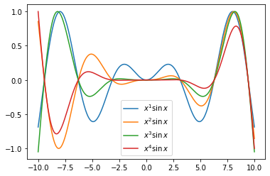
t = np.linspace(0., 0.1, 1000)
Vp_uk, Vp_us = 230 * np.sqrt(2), 120 * np.sqrt(2)
f_uk, f_us = 50, 60
V_uk = Vp_uk * np.sin(2 * np.pi * f_uk * t)
V_us = Vp_us * np.sin(2 * np.pi * f_us * t)
plt.plot(t*1000, V_uk, label='UK')
plt.plot(t*1000, V_us, label='US')
plt.title('A comparison of AC voltages in the UK and US')
plt.xlabel('Time /ms', fontsize=16.)
plt.ylabel('Voltage /V', fontsize=16.)
plt.legend()
plt.show()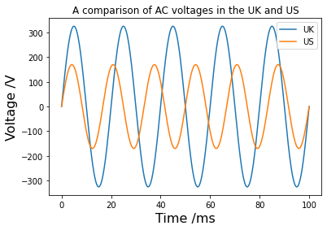
Algunos ejemplos
import numpy as np
import matplotlib.pyplot as plt
# The data - lists of years:
year = [1972, 1974, 1978, 1982, 1985, 1989, 1993, 1997, 1999, 2000, 2003,
2004, 2007, 2008, 2012]
# And number of transistors (ntrans) on CPUs in millions:
ntrans = [0.0025, 0.005, 0.029, 0.12, 0.275, 1.18, 3.1, 7.5, 24.0, 42.0,
220.0, 592.0, 1720.0, 2046.0, 3100.0]
# Turn the ntrans list into a NumPy array and multiply by 1 million.
ntrans = np.array(ntrans) * 1.e6
y0, n0 = year[0], ntrans[0]
# A linear array of years spanning the data ' s years.
y = np.linspace(y0, year[-1], year[-1] - y0 + 1)
# Time taken in years for the number of transistors to double.
T2 = 2.
moore = np.log10(n0) + (y - y0) / T2 * np.log10(2)
plt.plot(year, np.log10(ntrans), '*', markersize=12, color='r',
markeredgecolor='r', label='observed')
plt.plot(y, moore, linewidth=2, color='k', linestyle='--', label='predicted')
plt.legend(fontsize=16, loc='upper left')
plt.xlabel('Year')
plt.ylabel('log(ntrans)')
plt.title("Moore's law")
plt.show()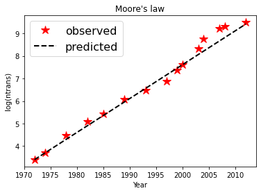
import matplotlib.pyplot as plt
years = range(2000, 2010)
divorce_rate = [5.0, 4.7, 4.6, 4.4, 4.3, 4.1, 4.2, 4.2, 4.2, 4.1]
margarine_consumption = [8.2, 7, 6.5, 5.3, 5.2, 4, 4.6, 4.5, 4.2, 3.7]
line1 = plt.plot(years, divorce_rate, 'b-o',
label='Divorce rate in Maine')
plt.ylabel('Divorces per 1000 people')
plt.legend()
plt.twinx()
line2 = plt.plot(years, margarine_consumption, 'r-o',
label='Margarine consumption')
plt.ylabel('lb of Margarine (per capita)')
# Jump through some hoops to get labels in the same legend:
lines = line1 + line2
labels = []
for line in lines:
labels.append(line.get_label())
plt.legend(lines, labels)
plt.show()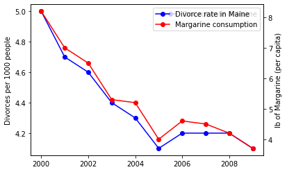
Gráficas en coordenadas polares
Para graficar en coordenadas polares se
plt.polar(tetha,r)
theta = np.linspace(0, 2.*np.pi, 1000)
a = 1.
r = 2 * a * (1. + np.cos(theta))
plt.polar(theta, r)
plt.show()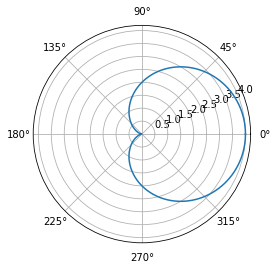
Histogrmas
Para gráficar un histogrma se usa el código
plt.hist(data, bins=20, density=True)
el comando bins indica el numero de particiones que se quiere hacer el gráfico y density=True establece la densidad
import matplotlib.pyplot as plt
import random
data = []
for i in range(5000):
data.append(random.normalvariate(0, 2))
plt.hist(data, bins=20, density=True)
plt.show()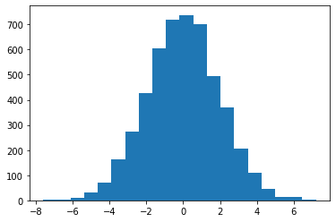
import numpy as np
s=np.array([1, 2, 4])
s[0]*s[1]2Animaciones
En python se puden hacer animaciones para ello puede consultar matplotlib